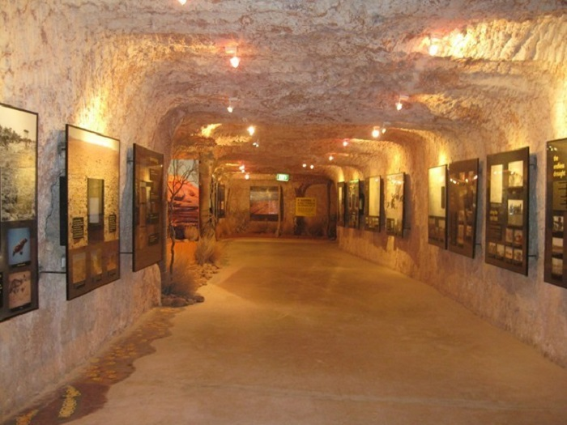

Sài Gòn – trung tâm kinh tế của cả nước
Hướng dẫn chi tiết kinh nghiệm du lịch địa đạo Củ Chi HẤP DẪN
Du lịch địa đạo Củ Chi là trải nghiệm khám phá “mê cung dưới lòng đất” – một trong những di tích nổi tiếng cấp quốc gia tại Sài Gòn. Địa điểm này mang đến cho bạn trải nghiệm thú vị trong hành trình du lịch tại thành phố mang tên Bác.
Địa đạo Củ Chi là điểm du lịch nổi tiếng bậc nhất tại Sài Gòn (Ảnh: Báo Giao thông)
Du lịch địa đạo Củ Chi hiện nay ngày càng phát triển bởi đây không chỉ là điểm đến có giá trị về lịch sử, văn hóa mà còn là điểm du lịch hấp dẫn gắn liền với những công trình quân sự nổi tiếng tại Việt Nam. Khám phá địa đạo Củ Chi sẽ giúp bạn và gia đình có được chuyến đi đầy trải nghiệm và ý nghĩa.
1. Tìm hiểu về địa đạo Củ Chi
Địa đạo Củ Chi là một trong những địa điểm du lịch Củ Chi nổi tiếng được nhiều du khách biết đến khi tham quan đến địa phương này. Khu di tích địa đạo Củ Chi tọa lạc tại đường tỉnh lộ 15, Ấp Phú Hiệp, xã Phú Mỹ Hưng, huyện Củ Chi, thành phố Hồ Chí Minh.
Không gian tại điểm du lịch địa đạo Củ Chi (Ảnh: Sở du lịch Thành phố Hồ Chí Minh)
Nếu muốn đi du lịch địa đạo Củ Chi, du khách sẽ phải di chuyển khoảng 70km từ trung tâm thành phố Hồ Chí Minh. Với khoảng cách không quá xa, bạn có thể lựa chọn cho mình rất nhiều hình thức di chuyển phù hợp với chuyến đi của mình.
Điểm du lịch này có tổng chiều dài lên tới 250km, có 3 tầng sâu khác nhau, tầng cao nhất cách mặt đất khoảng 3m, tầng giữa cách mặt đất 6m và tầng sâu nhất cách tới 12m. Đây là một trong 6 công trình nhân tạo nổi tiếng trên thế giới hiện nay. Bên cạnh đó, khu du lịch địa đạo Củ Chi cũng lọt vào top 7 điểm đến kỳ lạ nhất tại Đông Nam Á.
2. Lịch sử hình thành địa đạo Củ Chi
Từ lâu, địa đạo Củ Chi là một trong những điểm đến thú vị nhất tại Sài Gòn, tuy nhiên, không phải ai cũng có thể biết đến lịch sử hình thành của điểm du lịch này.
Sơ đồ địa đạo Củ Chi (Ảnh: Báo VietNamNet)
Lịch sử địa đạo Củ Chi gắn liền với cuộc kháng chiến chống Pháp, giai đoạn năm 1946 – 1948. Công trình được thực hiện bởi quân và dân xã Tân Phú Trung và xã Phước Vĩnh An nhằm ẩn nấp, cất giữ vũ khí, quân tư trang.
Ban đầu, mỗi ngôi làng tại đây đều có một hầm căn cứ riêng, tuy nhiên, do nhu cầu đi lại, vì vậy họ đã kết nối với nhau để tạo nên một hệ thống liên hoàn. Công trình địa đạo Củ Chi hiện nay nối liền 6 xã phía Bắc của địa đạo Củ Chi. Từ công trình này, quân sự có thể dễ dàng liên lạc, che giấu lực lượng, họp bàn những kế hoạch cách mạng.
Hình ảnh địa đạo Củ Chi – vùng đất thép anh hùng tại Sài Gòn (Ảnh: Sưu tầm)
Từ năm 1961 – 1965, công trình này được phát triển ra thành nhiều nhánh thông với nhau. Phía trên của công trình này còn được trang bị với rất nhiều hố đinh, hầm chuông, bãi mìn… phục vụ cho cuộc chiến đấu của quân và dân ta.
3. Đường đến khu du lịch địa đạo Củ Chi thế nào?
Địa đạo Củ Chi cách trung tâm thành phố Hồ Chí Minh khoảng 70km về hướng Tây Bắc. Để có thể đi du lịch địa đạo Củ Chi, bạn có thể chọn cho mình rất nhiều phương tiện di chuyển khác nhau, cụ thể như:
- Xe máy, xe ô tô tự lái: Từ trung tâm thành phố Hồ Chí Minh, bạn có thể đi từ Bến Thành qua đường Cách Mạng tháng 8, sau đó đi tiếp các tuyến đường Trường Chinh, cầu An Sương, quốc lộ 22, Bà Triệu, Trưng Nữ Vương…. Sau đó du khách tiếp tục đi thẳng để chạy thẳng qua thị trấn Hóc Môn, đi qua cầu Sáng chạy theo tỉnh lộ 15, đến cầy Sáng, qua ngã tư Tân Quy, cầu Bến Nẩy, chợ Phú Hòa Đông là đến khu di tích lịch sử địa đạo Củ Chi.
- Đi taxi: Nếu bạn có nhiều hành lý và muốn có một chuyến đi thoải mái, thuận tiện thì taxi có lẽ là phương tiện phù hợp nhất. Tuy nhiên, bạn cũng cần phải cân nhắc kỹ lưỡng bởi với đoạn đường 70km từ trung tâm thành phố, giá taxi sẽ giao động khoảng 500.000 – 600.000 VNĐ/lượt.
- Xe buýt: Nếu bạn có nhiều thời gian trong chuyến đi của mình và muốn tiết kiệm chi phí thì xe buýt cũng được xem là một phương tiện phù hợp. Du khách có thể ra Bến Thành bắt tuyến xe 13 đến bến xe Củ Chi, sau đó tiếp tục đi xe 79 để đến địa đạo Củ Chi. Khoảng thời gian di chuyển của xe buýt khoảng 2 tiếng rưỡi nên nếu bạn có thời gian thì nên lựa chọn phương tiện này.
- Cano, thuyền: Đây chắc chắn sẽ là phương tiện độc và lạ nhất để đi du lịch địa đạo Củ Chi. Ngoài ra, phương tiện này còn có thể giúp cho du khách thoải mái chiêm ngưỡng, tham quan cảnh đẹp hai bên bờ sông và check-in trên thuyền.
Nhiều du khách lựa chọn xe máy “phượt” để có nhiều trải nghiệm du lịch thú vị (Ảnh: Sưu tầm)
Xe buýt là phương tiện giá rẻ nhất khi du lịch địa đạo Củ Chi (Ảnh: Báo Lao động trẻ)
Để có được chuyến du lịch địa đạo Củ Chi thuận tiện nhất, du khách nên lựa chọn cho mình những khách sạn có vị trí thuận lợi. Với kinh nghiệm du lịch địa đạo Củ Chi, nhiều du khách vẫn ưu tiên lựa chọn cho mình khách sạn gần trung tâm thành phố để thuận tiện cho việc kết nối với nhiều điểm du lịch khác.
4. Khám phá khu di tích địa đạo Củ Chi chi tiết
4.1. Tham quan hầm địa đạo Củ Chi

Du khách có thể thoải mái check-in bên trong hầm địa đạo Củ Chi (Ảnh: Sưu tầm)
Du lịch địa đạo Củ Chi sẽ thật thiếu sót nếu bỏ qua việc khám phá vào bên trong những đường hầm nằm sâu dưới lòng đất. Du khách có thể chiêm ngưỡng những đoạn đường hầm – nơi mà quân và dân ta hoạt động trong thời kỳ chiến tranh. Đoạn đường hầm có chiều dài 120m với 2 tầng sẽ mang đến cho bạn rất nhiều trải nghiệm thú vị.
Bên cạnh đó, tại đây, bạn còn thoải mái được thưởng thức những món ăn mang đậm hương vị địa phương – đây là những món ăn mà người dân thời xưa vẫn ăn dưới hầm địa đạo như: Khoai, sắn, củ mài chấm muối vừng,…
4.2. Khám phá khu tái hiện vùng chiến tranh ở khu du lịch địa đạo Củ Chi
Là một trong những địa danh lịch sử nổi tiếng, ý nghĩa của địa đạo Củ Chi còn gắn liền với lịch sử và chiến tranh. Đến với địa điểm này, bạn nên trải nghiệm khám phá khu tái hiện vùng chiến tranh.
Du khách được hướng dẫn tham quan tại địa đạo Củ Chi (Ảnh: Sưu tầm)
Tại đây, bạn sẽ được xem những thước phim quay chậm về toàn bộ cảnh sinh hoạt, chiến đấu của quân và dân ta khi sinh sống tại vùng đất này. Ngoài ra, bạn cũng có thể chiêm ngưỡng rất nhiều mô hình di tích, lịch sử nổi tiếng của Việt nam được tái hiện ở điểm du lịch này như: cầu Long Biên, chùa Một Cột, bến Nhà Rồng, cầu Sài Gòn….
4.3. Thử sức với khu bắn súng bên trong địa đạo Củ Chi
Những du khách khi đến với địa đạo Củ Chi cũng khá thích thú với hoạt động tháo lắp súng, thử tài bắn súng. Bạn sẽ được chỉ dẫn nhiệt tình bởi các nhân viên của khu du lịch này. Thông thường, địa điểm này cũng thu hút rất đông du khách, đặc biệt là du khách nước ngoài.
Du khách thích thú với trải nghiệm bắn súng tại địa đạo Củ Chi (Ảnh: VnExpress)
Mức giá vé địa đạo Củ Chi để trải nghiệm hoạt động này đó chính là 50.000 VNĐ/người/60 phút.
4.4. Tham quan khu hồ tắm mô phỏng Biển Đông
Địa đạo Củ Chi còn được biết đến là một trong những khu du lịch Củ Chi nổi tiếng với đa dạng các hoạt động khác nhau. Sau chuyến tham quan tại các đường hầm, các hoạt động quân sự, du khách có thể đắm mình trong những làn nước trong xanh tại khu hồ tắm mô phỏng Biển Đông. Mức giá vé trải nghiệm hoạt động này là 20.000 VNĐ/người.
Khu tắm mô phỏng biển đông tại điểm du lịch địa đạo Củ Chi (Ảnh: Sưu tầm)
4.5. Thưởng thức vườn trái cây trung An trong khu di tích địa đạo Củ Chi
Tại địa điểm du lịch này, du khách vô cùng thích thú khi tham quan các miệt vườn, thưởng thức nhiều loại trái cây thơm ngon. Vườn trái cây trung An khá nổi tiếng tại đây, du khách có thể tận tay hái và thưởng thức nhiều loại trái cây thơm ngon ngay tại vườn như: Chôm chôm, mận, mút, sầu riêng,…
Thoải mái check-in tại vườn trái cây trung An (Ảnh: Sưu tầm)
4.6. Tham quan trạm cứu hộ động vật hoang dã
Bản đồ địa đạo Củ Chi sẽ hướng dẫn bạn tham quan trạm cứu hộ động vật hoang dã, địa điểm này chỉ cách trung tâm khu du lịch khoảng 1km, tọa lạc giữa bến Dược và bến Đình. Đây cũng được xem là trạm cứu hộ lớn nhất tại khu vực phía Nam với hơn 3.600 loài động vật quý hiếm. Du khách khi đến với điểm du lịch này có thể thoải mái vui chơi cùng động vật cũng như nghe những câu chuyện được nhân viên kể lại về các động vật tại đây.
Trạm cứu hộ động vật hoang dã thu hút nhiều du khách tham quan (Ảnh: Sưu tầm)
4.7. Trải nghiệm lưu trú tại các khách sạn chất lượng
Bên cạnh việc lên lịch trình chi tiết khám phá những khu du lịch gần địa đạo Củ Chi, du khách cũng cần cân nhắc về điểm lưu trú chất lượng giúp cho chuyến đi của mình trở nên thuận tiện, ý nghĩa hơn.
Vinpearl Luxury Landmark 81 là một trong những khách sạn sang trọng bậc nhất tại thành phố Hồ Chí Minh, khách sạn này tọa lạc tại vị trí trung tâm, gần với nhiều điểm du lịch giúp cho bạn có được chuyến đi thuận tiện nhất. Ngoài ra, đây còn là khách sạn hội tụ đầy đủ các tiện nghi, dịch vụ đa dạng mang đến cho bạn sự thư giãn sảng khoái trong hành trình của mình.
5. Du lịch địa đạo Củ Chi nên lưu trú ở đâu?
Tại thành phố Hồ Chí Minh nói chung hay tại huyện Củ Chi nói riêng đều có rất nhiều khách sạn phục vụ cho nhu cầu lưu trú của du khách khi đi du lịch địa đạo Củ Chi. Tuy nhiên, để có được một chuyến đi trọn vẹn, bạn nên lựa chọn cho mình những khách sạn chất lượng, hội tụ nhiều dịch vụ nghỉ dưỡng đa dạng.
Phòng nghỉ sang trọng tại Vinpearl Luxury Landmark 81
Vinpearl Luxury Landmark 81 là một trong những khách sạn sang trọng bậc nhất tại Sài Gòn. Khách sạn này tọa lạc tại vị trí trung tâm với đa dạng các dịch vụ như: Phòng nghỉ sang trọng, tiện nghi; dịch vụ spa, massage; hệ thống nhà hàng; bể bơi vô cực,… Mặc dù tọa lạc tại vị trí hơi xa so với điểm du lịch địa đạo Củ Chi, tuy nhiên, những trải nghiệm tại khách sạn này chắc chắn sẽ mang lại cho bạn sự hài lòng tuyệt đối.
6. Tham quan địa đạo Củ Chi ăn gì?
Nhiều du khách có kinh nghiệm khi hướng dẫn du lịch địa đạo Củ Chi, họ bày tỏ sự thích thú với rất nhiều quán ăn ngon, món ăn thú vị trên các tuyến đường đến với điểm du lịch này. Cụ thể, bạn có thể thưởng thức một số những món ăn sau:
- Bún giò heo Minh Quý: Đây có lẽ sẽ là món ăn lý tưởng cho buổi sáng để bắt đầu chuyến hành trình đến tham quan địa điểm du lịch địa đạo Củ Chi. Quán ăn cũng mở cả ngày nên bạn có thể thưởng thức bất kỳ khi nào.
- Khoai mì luộc chấm muối: Đây là món ăn gắn liền với nhiều người dân địa phương, quân đội ta khi sinh sống dưới hầm địa đạo này. Vì vậy, nhiều du khách đã thưởng thức món ăn này để phần nào cảm nhận được cuộc sống chân thực dưới hầm địa đạo.
- Thịt bò tơ Củ Chi: Thịt bò tơ được chế biến thành nhiều món ăn ngon cũng rất nổi tiếng tại Củ Chi. Bạn có thể dễ dàng tìm kiếm cho mình món ăn này tại nhiều quán dọc đường đến với địa đạo Củ Chi.
- Các món chè: Sau chuyến hành trình khám phá hầm địa đạo, bạn có thể cùng người thân, bạn bè thưởng thức các món chè thơm ngon mang đậm hương vị của người dân Nam Bộ.
- Nước mía sầu riêng: Các quán nước mía tại đây mở từ 6 giờ sáng đến 8 giờ tối, giá chỉ 10.000 VNĐ/ly, du khách có thể lựa chọn thức uống này giải khát khi du lịch địa đạo Củ Chi.
Bún giò heo thơm ngon tiếp thêm năng lượng du lịch địa đạo Củ Chi (Ảnh: Sưu tầm)
Món khoai mì luộc chấm muối gắn liền với cuộc sống người dân Củ Chi (Ảnh: Sưu tầm)
Nước mía sầu riêng rất nổi tiếng tại vùng Nam Bộ (Ảnh: Sưu tầm)
7. Mua gì làm quà khi du lịch địa đạo Củ Chi?
Hầu hết các du khách khi đến tham quan các điểm du lịch tại Sài Gòn đều muốn mua quà về cho người thân, bạn bè. Tại khu di tích lịch sử địa đạo Củ Chi, du khách có thể mua những món đồ được làm từ vỏ đạn như: Bật lửa, bút, đèn,… để làm quà cho chuyến đi của mình. Bên cạnh đó, các cửa hàng gần điểm du lịch này còn có các sản phẩm mây tre đan thủ công cũng rất phù hợp để làm quà.
Bút làm từ vỏ đạn là món quà phổ biến khi du lịch địa đạo Củ Chi (Ảnh: Sưu tầm)
8. Những điều cần biết khi đến địa đạo Củ Chi
8.1. Giá vé và giờ mở cửa khi tham quan địa đạo Củ Chi
Khi du lịch địa đạo Củ Chi, du khách cần lưu ý giờ mở cửa: 7h00 – 17h00 hàng ngày. Vì vậy bạn nên cân đối lịch trình để có được chuyến đi thuận tiện và khám phá trọn vẹn địa điểm du lịch này.
Địa đạo Củ Chi là điểm du lịch có mức giá vé khá rẻ tại Sài Gòn (Ảnh: Sưu tầm)
Ngoài ra, giá vé khu du lịch địa đạo Củ Chi giao động khoảng 20.000 - 30.000 VNĐ/người, chui hầm 20.000 VNĐ/người, các trò chơi 50.000 VNĐ/người. Mức giá này được quy định rõ ràng từ ban quản lý khu di tích, không có thêm bất kỳ chi phí phát sinh nên bạn có thể xem kỳ để đảm bảo mặt tài chính khi du lịch.
8.2. Lưu ý khi tới du lịch địa đạo Củ Chi
Để có được chuyến du lịch địa đạo Củ Chi trọn vẹn và thuận tiện nhất, du khách có thể đọc thêm về những lưu ý và một vài mẹo nhỏ dưới đây:
- Địa điểm du lịch này không quy định về trang phục khi tham quan. Tuy nhiên, du khách sẽ chui dưới hầm để khám phá, trải nghiệm, vì vậy bạn nên lựa chọn cho mình trang phục gọn gàng, tối màu để thuận tiện di chuyển và tránh bám bẩn.
- Nên đi giày thể thao để thoải mái hơn khi di chuyển.
- Du khách nên lựa chọn kem chống nắng, kem bôi côn trùng để đồng hành với chuyến đi của mình.
- Với những du khách sợ không gian hẹp hay huyết áp thấp thì không nên đi vào những đường hầm nhỏ.
Du khách nên mặc trang phục đơn giản, tối màu để thuận tiện khám phá địa đạo Củ Chi (Ảnh: Du lịch số)
9. Gợi ý lịch trình tham quan địa đạo Củ Chi hấp dẫn
9.1. Lịch trình khám phá Củ Chi nửa ngày
Trong khoảng thời gian nửa ngày khám phá Củ Chi, du khách có thể trải nghiệm với đường hầm Củ Chi, tìm hiểu về những vũ khí độc đáo được quân và dân ta chế biến trong các cuộc chiến tranh lịch sử, điển hình như những bẫy chông bằng tre được phủ đầy lá khô vô cùng độc đáo. Những công trình này là minh chính cho lịch sử địa đạo Củ Chi vô cùng hào hùng và cũng cho thấy những vết tích tàn khốc của chiến tranh.
Chứng kiến những chứng tích chiến tranh độc đáo tại địa đạo Củ Chi (Ảnh: Sưu tầm)
Ngoài ra, du lịch địa đạo Củ Chi nửa ngày, bạn cũng có thể thưởng thức nhiều món ăn dân dã do chính người dân chế biến như khoai mì nướng chấm muối mè… Mặc dù những món ăn khá đơn sơ, nhưng nhiều du khách vẫn lựa chọn thưởng thức để hiểu được cuộc sống của nhân dân bản địa cũng như quân dân thời kháng chiến.
9.2. Lịch trình tham quan Sài Gòn – Củ Chi
Du lịch địa đạo Củ Chi 1 ngày thường là lựa chọn được nhiều du khách ưu tiên bởi khoảng thời gian này có thể giúp bạn thoải mái di chuyển và khám phá.
Du khách được hướng dẫn viên du lịch giới thiệu chi tiết về từng công trình tại hầm địa đạo Củ Chi (Ảnh: Báo Nhân dân)
Lịch trình Sài Gòn – Củ chi 1 ngày, du khách có thể ghé thăm rất nhiều địa điểm khác nhau như: Bảo tàng chứng tích chiến tranh, nhà thờ Đức Bà cổ kính, Dinh Độc Lập, Bưu điện cổ nhất thành phố. Cuối cùng, du khách có thể di chuyển du lịch địa đạo Củ Chi để khám phá địa danh lịch sử nổi tiếng này…